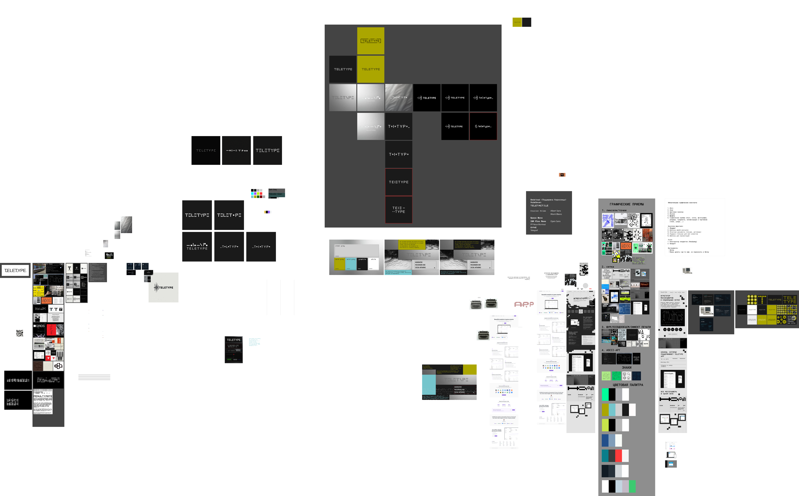
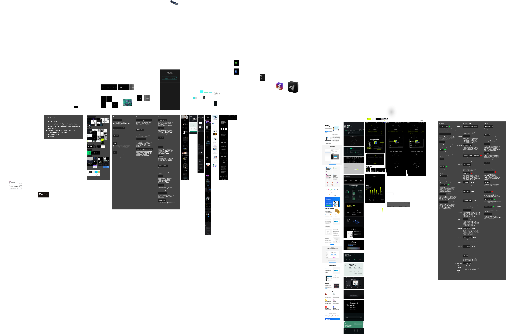
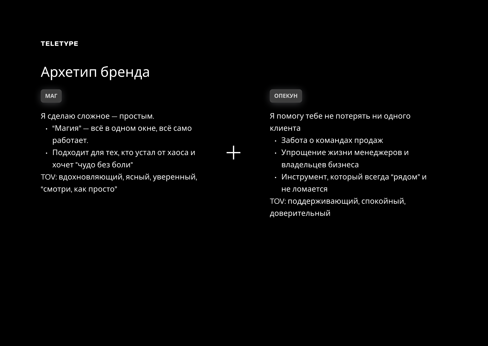
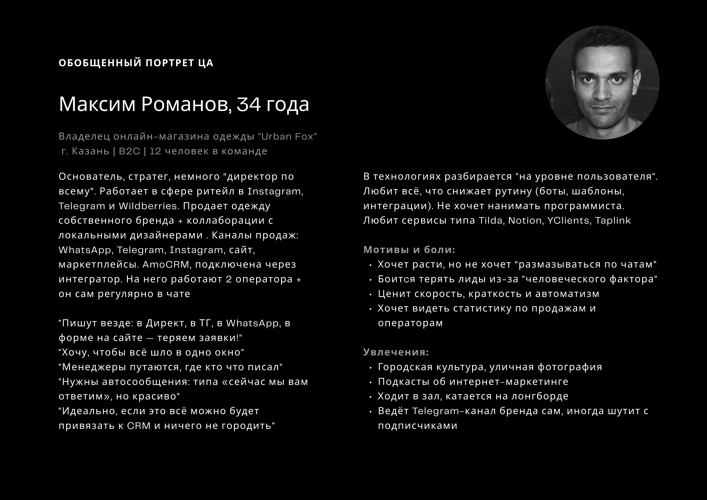
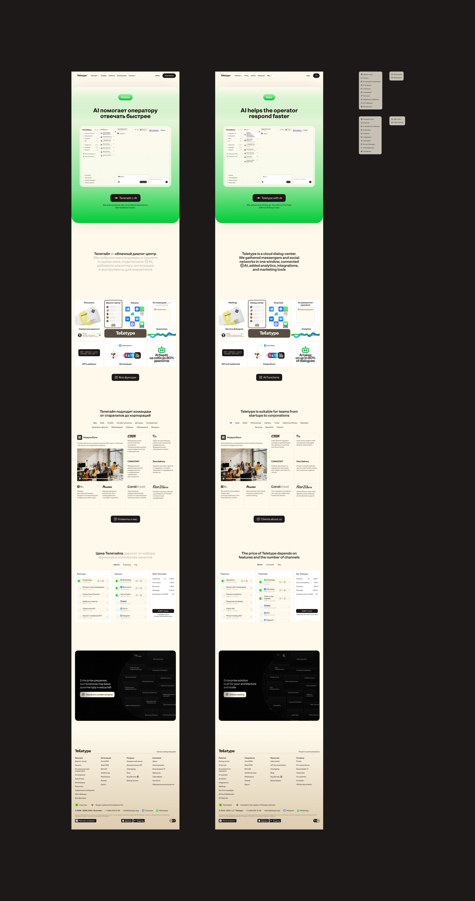
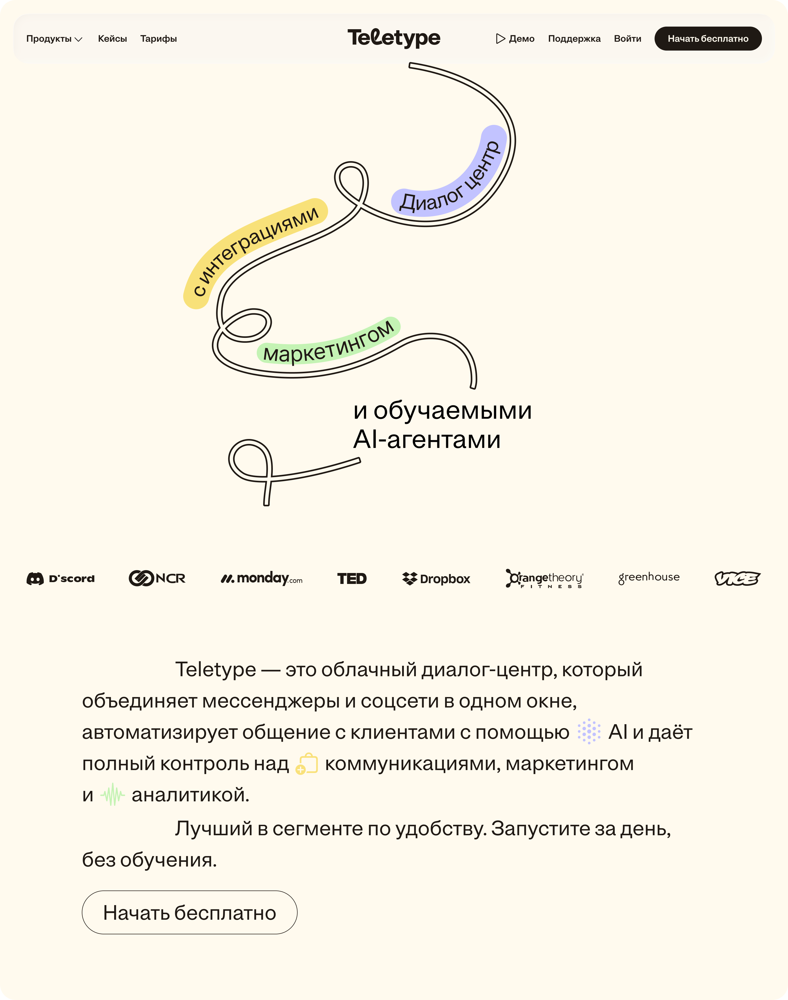
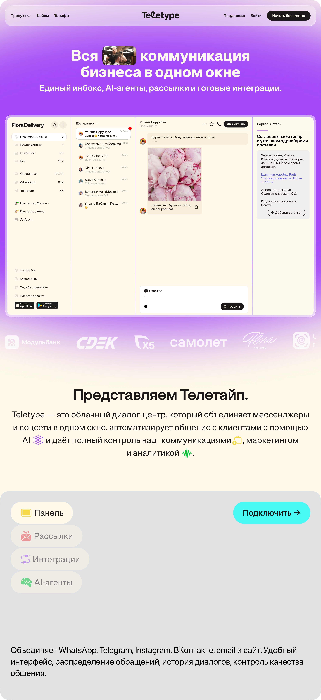

Teletype
Brief and problem statement
Teletype approached us to refresh their visual style. We started with the brief: the product, its audience, strengths and weaknesses. Functionally, the service was strong, but its communication lacked clarity and cohesion.
The challenge: position Teletype as a cloud service for customer communication and differentiate from competitors.


Positioning
Analyzed 20+ competitors: from Intercom and Zendesk to Jivo and Carrot Quest. Found the niche: a cloud service with AI for customer communication.
Built a persona: online store owner, 12-person team, losing leads across scattered chats. Wants everything in one window. Doesn't want to hire a developer.
Values
- Always be in touch
- High enterprise standards
- Care for the person at every touchpoint
Tone of voice
Confident, calm, avoiding tech jargon, speaking human to human.
Before: “Aggregator of messengers and social networks.” After: “Teletype — cloud dialog center for business.”



Brand attribute scales

Graphic techniques


Audience and archetype
Defined the brand archetype — Magician + Caregiver — and built the target audience portrait. This became the foundation for tone, visual language, and communication structure.



Teletype is a cloud dialog center for business. The service brings together messengers, social networks, email and website chat in one window, merges scattered inquiries into a unified communication history, connects AI agents, adds analytics, integrations and marketing tools.

abcdefghijklmnopqrstuvwxyz
0123456789
!@#$%^&*( ).


Context
After the identity update, the old landing page no longer matched the new positioning. The visual language was outdated, the structure didn't reflect the product's key strengths, and sign-up conversion was below expectations.
Challenge
Design a new landing page that:
- Communicates the updated positioning: cloud dialog center with AI
- Conveys product value in the first seconds
- Shows the interface in action
- Drives sign-ups
Solution
The landing page follows the logic: problem → product → how it works → who it's for → result. Visually — the new brand style, interface animations, clean typography. Minimal text, maximum clarity.

Iterations
We explored 12+ landing concepts: from structure and messaging to visual language. Each iteration refined the balance between information and emotion.



Result
The landing page launched alongside the updated brand. It became the entry point for new users and the product's calling card.